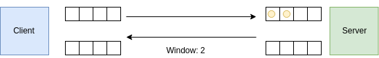
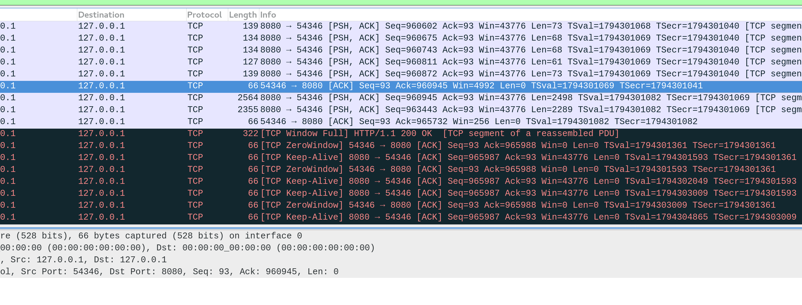

Handle Intense Workloads with Backpressure and Reactive Streams
Arnout Engelen
Agenda:
- Reactive Streams
- Akka Streams
- Akka HTTP
- Demo!
1. Reactive Streams

Open Source toolkit for building Concurrent, Distributed, Resilient Message-Driven applications on the JVM
Traditional synchronous model
class MyService {
public Result performTask(Task task) throws Exception {
// ... do work
}
}for (Task task: tasks) {
Result result = service.performTask(task);
// Handle result...
}Asynchronous approach
static class MyActor extends AbstractActor {
@Override
public Receive createReceive() {
return receiveBuilder()
.match(Task.class, task -> { /* do work */ })
.build();
}
}for (Task task: tasks) {
actor.tell(task, noSender());
}class MyActor extends Actor {
override def receive = {
case Task(/*params*/) ⇒ /* do work */
}
}for (task <- tasks) {
actor ! task
}Akka toolkit
Actor model
Clustering
Persistence (Event Sourcing)
HTTP
So far the good news…
static class MyActor extends AbstractActor {
@Override
public Receive createReceive() {
return receiveBuilder()
.match(Task.class, task -> { /* do work */ })
.build();
}
}for (Task task: tasks) {
actor.tell(task, noSender());
}class MyActor extends Actor {
override def receive = {
case Task(/*params*/) ⇒ /* do work */
}
}for (task <- tasks) {
actor ! task
}OutOfMemoryError
Reactive Streams Timeline

Reactive Streams Scope
Reactive Streams is an initiative to provide a standard for asynchronous stream processing with non-blocking back pressure. This encompasses efforts aimed at runtime environments (JVM and JavaScript) as well as network protocols
java.util.concurrent.Flow
public interface Publisher<T> {
public void subscribe(Subscriber<? super T> s);
}public interface Subscriber<T> {
public void onSubscribe(Subscription s);
public void onNext(T t);
public void onError(Throwable t);
public void onComplete();
}public interface Subscription {
public void request(long n);
public void cancel();
}public interface Processor<T, R> extends Subscriber<T>, Publisher<R> {
}Availablility
Included in JDK9
No JDK9? No problem!
<dependency>
<groupId>org.reactivestreams</groupId>
<artifactId>reactive-streams</artifactId>
<version>1.0.2</version>
</dependency>
Specifications
- 11-17 requirements (some subtle). Each.
- Technology Compatibility Kit (TCK)
2. Akka Streams

Source.range(0, 20000000);Flow.fromFunction(n -> n.toString());Sink.foreach(str -> System.out.println(str));Source<Integer, NotUsed> source =
Source.range(0, 20000000);Flow<Integer, String, NotUsed> flow =
Flow.fromFunction(n -> n.toString());Sink<String, CompletionStage<Done>> sink =
Sink.foreach(str -> System.out.println(str));RunnableGraph<NotUsed> runnable =
source.via(flow).to(sink);ActorSystem system = ActorSystem.create();
Materializer materializer = ActorMaterializer.create(system);
runnable.run(materializer);val source = Source(0 to 20000000)val flow = Flow[Int].map(_.toString())val sink = Sink.foreach[String](println(_))val runnable = source.via(flow).to(sink)implicit val system = ActorSystem()
implicit val mat = ActorMaterializer()
runnable.run()Java:
Source.range(0, 20000000)
.map(Object::toString)
.runForeach(str -> System.out.println(str), materializer);Scala:
Source(0 to 20000000)
.map(_.toString)
.runForeach(println)Materialization
RunnableGraph<NotUsed> graph = Source.range(0, 20000000)
.map(Object::toString)
.to(Sink.foreach(str -> System.out.println(str)));
ActorSystem system = ActorSystem.create();
Materializer materializer = ActorMaterializer.create(system);
NotUsed n1 = graph.run(materializer);
NotUsed n2 = graph.run(materializer);val graph = Source(0 to 20000000)
.map(_.toString)
.to(Sink.foreach(println))
implicit val system = ActorSystem()
implicit val materializer = ActorMaterializer()
val n1: NotUsed = graph.run()
val n2: NotUsed = graph.run()Materialized values
Source<String, ActorRef> source =
Source.actorRef(23, OverflowStrategy.dropNew());
Sink<String, CompletionStage<String>> sink =
Sink.reduce((l, r) -> l + r);
ActorRef actor = source.to(sink).run(materializer);
actor.tell("Message", ActorRef.noSender());val source: Source[String, ActorRef] =
Source.actorRef(bufferSize = 23, OverflowStrategy.dropNew)
val sink: Sink[String, Future[String]] =
Sink.reduce(_ + _)
val actor: ActorRef = source.to(sink).run()
actor ! "Message"Materialized values
Source<String, ActorRef> source =
Source.actorRef(23, OverflowStrategy.dropNew());
Sink<String, CompletionStage<String>> sink =
Sink.reduce((l, r) -> l + r);
RunnableGraph<ActorRef> graph1 =
source.to(sink);
RunnableGraph<CompletionStage<String>> graph2 =
source.toMat(sink, Keep.right());
RunnableGraph<Pair<ActorRef, CompletionStage<String>>> graph3 =
source.toMat(sink, Keep.both());val source: Source[String, ActorRef] =
Source.actorRef(bufferSize = 23, OverflowStrategy.dropNew)
val sink: Sink[String, Future[String]] =
Sink.reduce(_ + _)
val graph1: RunnableGraph[ActorRef] =
source.to(sink)
val graph2: RunnableGraph[Future[String]] =
source.toMat(sink)(Keep.right)
val graph3: RunnableGraph[(ActorRef, Future[String])] =
source.toMat(sink)(Keep.both)Actor materialization
Source.range(1, 3)
.map(x -> x + 1)
.map(x -> x * 2)
.to(Sink.reduce((x, y) -> x + y));Source(1 to 3)
.map(x => x + 1)
.map(x => x * 2)
.to(Sink.reduce[Int](_ + _))Fusing
Source.range(1, 3)
.map(x -> x + 1).async()
.map(x -> x * 2)
.to(Sink.reduce((x, y) -> x + y));Source(1 to 3)
.map(x => x + 1).async
.map(x => x * 2)
.to(Sink.reduce[Int](_ + _))
Fusing
Source.range(1, 3)
.map(x -> x + 1)
.mapAsync(5, n -> CompletableFuture.completedFuture(n * 2))
.to(Sink.reduce((x, y) -> x + y));Source(1 to 3)
.map(x => x + 1)
.mapAsync(5)(n => Future.successful(n * 2))
.to(Sink.reduce[Int](_ + _))
Backpressure propagation
Demand is signalled across async boundaries
Backpressure propagation
Thanks to Reactive Streams, across different libraries:
Backpressure propagation
Often also possible across external protocols, i.e. TCP:


Backpressure propagation
Can be seen in e.g. wireshark:

Live demo time!
We’ve only just begun…

3. Akka HTTP
Binding
ActorSystem system = ActorSystem.create();
Http http = Http.get(system);Source<IncomingConnection, CompletionStage<ServerBinding>> bind =
http.bind(ConnectHttp.toHost("localhost", 0));Materializer materializer = ActorMaterializer.create(system);
CompletionStage<ServerBinding> bound = bind
.to(Sink.foreach(c -> out.println("Got HTTP connection!")))
.run(materializer);bound.thenAccept(b ->
out.println("Bound on " + b.localAddress()));implicit val system = ActorSystem()
val http = Http()val binding: Source[IncomingConnection, Future[ServerBinding]] =
http.bind("localhost", port = 0)implicit val materializer = ActorMaterializer()
val bound: Future[ServerBinding] = binding
.to(Sink.foreach(c => println(s"Got HTTP connection!")))
.run()bound.foreach(b =>
println("Bound on " + b.localAddress))Connection
Is a Flow[Response, Request, _]:
Flow<HttpResponse, HttpRequest, NotUsed> flow =
connection.flow();
// Materialize and run it yourselfval flow: Flow[HttpResponse, HttpRequest, NotUsed] =
connection.flow
// Materialize and run it yourselfOr provide your Flow[Request, Response, _]:
// Construct your flow:
Flow<HttpRequest, HttpResponse, NotUsed> flow = myflow;
// Use it to handle the connection:
connection.handleWith(flow, materializer);// Construct your flow:
val flow: Flow[HttpRequest, HttpResponse, NotUsed] = myflow
// Use it to handle the connection:
connection.handleWith(flow)http.bindAndHandle()
// Construct your flow:
Flow<HttpRequest, HttpResponse, NotUsed> flow = myflow;
// Use it to handle connections:
http.bindAndHandle(
flow,
ConnectHttp.toHost("localhost", 8080),
materializer);// Construct your flow:
val flow: Flow[HttpRequest, HttpResponse, NotUsed] = myflow
// Use it to handle connections:
http.bindAndHandle(
flow,
"localhost",
port = 8080)Routing DSL
Route route = path("hello", () ->
get(() ->
complete("Hello, world!")
)
);Flow<HttpRequest, HttpResponse, NotUsed> flow =
route.flow(system, materializer);val route: Route = path("hello") {
get {
complete("Hello, world!")
}
}// RouteResult.route2HandlerFlow(route)
val flow2: Flow[HttpRequest, HttpResponse, NotUsed] = routeExample: numbers
Path matching
Route route = path("hello", () ->
get(() ->
complete("Hello, world!")
)
);val route: Route = path("hello") {
get {
complete("Hello, world!")
}
}Route path(String segment, Supplier<Route> inner) { Route path(PathMatcher0 p, Supplier<Route> inner) {
<T> Route path(PathMatcher1<T> p, Function<T, Route> inner) {
<T1, T2> Route path(PathMatcher2<T1, T2> p, BiFunction<T1, T2, Route> inner) {def path[L](pm: PathMatcher[L]): Directive[L]abstract class PathMatcher[L: Tuple]
type PathMatcher0 = PathMatcher[Unit]
type PathMatcher1[T] = PathMatcher[Tuple1[T]]
type PathMatcher2[T,U] = PathMatcher[Tuple2[T,U]]
// .. etc Route path(PathMatcher0 p, Supplier<Route> inner) {
<T> Route path(PathMatcher1<T> p, Function<T, Route> inner) {
<T1, T2> Route path(PathMatcher2<T1, T2> p, BiFunction<T1, T2, Route> inner) {Route route = path(PathMatchers.segment("hello"), () ->
complete("Hello, World!"));Route route = path(segment("hello"), () ->
complete("Hello, World!"));Route route = path(segment("hello").slash(segment()), name ->
complete("Hello, " + name + "!"));abstract class PathMatcher[L: Tuple]
type PathMatcher0 = PathMatcher[Unit]
type PathMatcher1[T] = PathMatcher[Tuple1[T]]
type PathMatcher2[T,U] = PathMatcher[Tuple2[T,U]]
// .. etcval route = path("hello") {
complete("Hello, World!")
}val route = path("hello" / Segment) { name =>
complete("Hello, " + name + "!")
}PathMatcher1<Integer> m =
PathMatchers
.segment("foo")
.slash("bar")
.slash(
segment("X").concat(integerSegment())
)
.slash(
segment("edit").orElse(segment("create"))
);val matcher: PathMatcher1[Option[Int]] =
"foo" / "bar" / "X" ~ IntNumber.? / ("edit" | "create")This will match paths like foo/bar/X42/edit or foo/bar/X37/create.
Other Akka HTTP features
Client API
Server-side HTTP/2
Marshalling API
Content negotiation
4. Demo
Challenge
- HTTP front-end
- FTP back-end
Alpakka
Alpakka
Community for Akka Streams connectors
FTP client
Exposed via HTTP
Let’s put some load on it!

Stream the entity
Avoid:
Source<ByteString, CompletionStage<IOResult>> source =
Ftp.fromPath(filename, ftpSettings);
CompletionStage<ByteString> result =
source.toMat(Sink.reduce(ByteString::concat), Keep.right()).run(materializer);
return onSuccess(() -> result, bytes -> complete(HttpEntities.create(bytes)));val route = path("file" / Segment) { filename => {
val source = Ftp.fromPath(filename, ftpSettings)
val result = source.toMat(Sink.reduce[ByteString](_ ++ _))(Keep.right).run()
complete(result)
}}But use:
Source<ByteString, CompletionStage<IOResult>> source =
Ftp.fromPath(filename, ftpSettings);
HttpEntity.CloseDelimited entity =
HttpEntities.createCloseDelimited(
ContentTypes.APPLICATION_OCTET_STREAM,
source
);
return complete(HttpResponse.create().withEntity(entity));val route = path("file" / Segment) { filename => {
val source = Ftp.fromPath(filename, ftpSettings)
complete(HttpEntity.Chunked(
ContentTypes.`application/octet-stream`,
source.map(bytes ⇒ ChunkStreamPart(bytes))))
}}Let’s go again!

With room to spare

Re-cap
Backpressure prevents overload
Reactive Streams for integration
e.g. Akka Streams to implement
e.g. Akka HTTP to leverage
Happy hAkking!
- Slides & Code
- github.com/raboof/akka-http-backpressure
- Docs & QuickStarts
- akka.io, developer.lightbend.com/start
- Community
- gitter.im/akka/akka
- Tweet
- @akkateam, @raboofje
scala